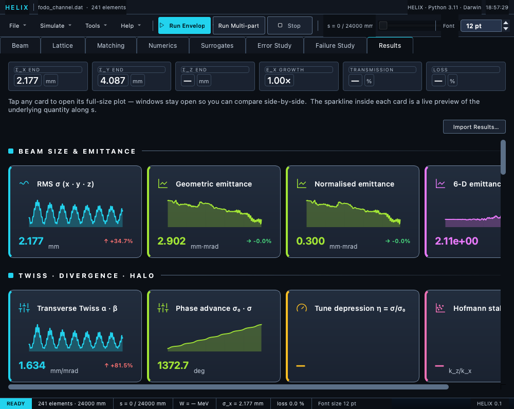
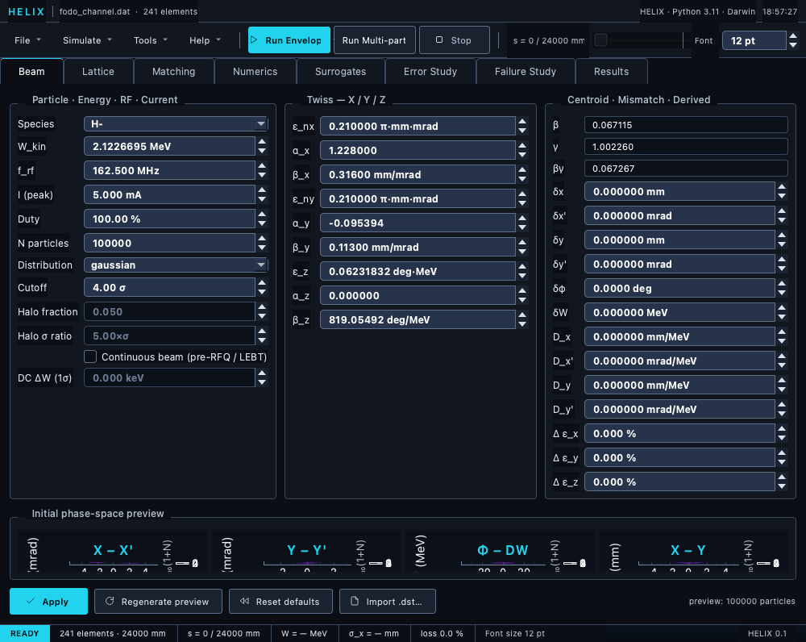
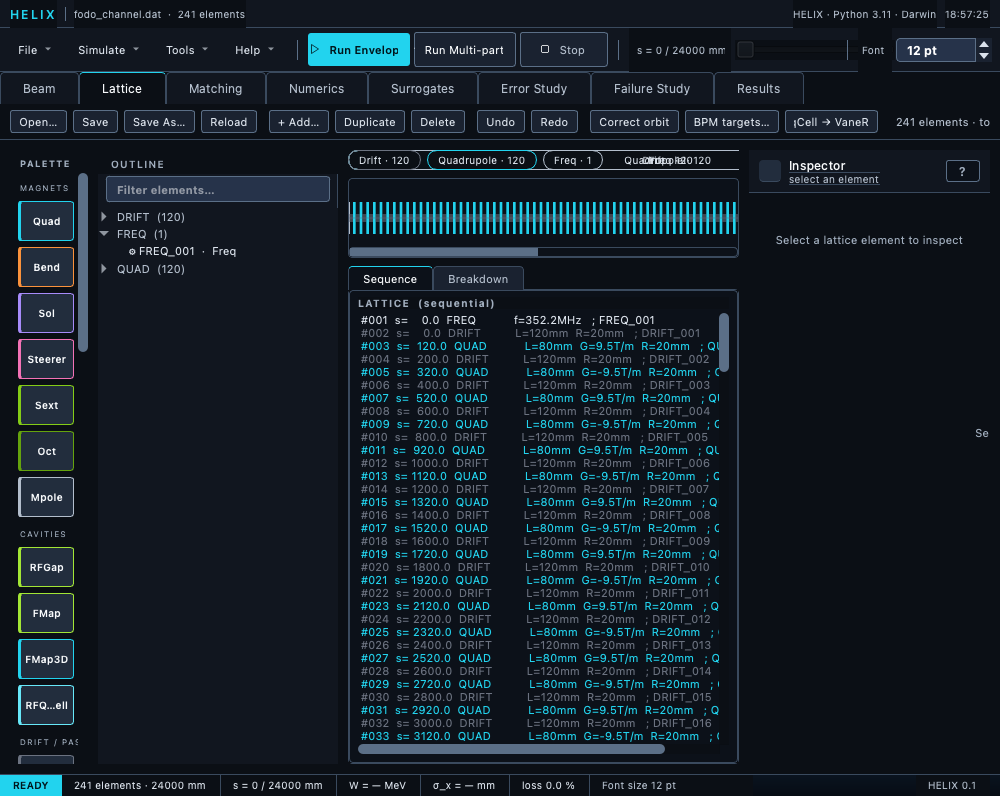

The workbench
Design the lattice, configure the beam, run, and explore.
A complete PyQt6 desktop app. Every screenshot below is the real interface running the bundled showcase deck — nothing staged.


Live KPIs and per-quantity sparkline cards — tap any card for the full plot.

6-D phase-space density preview — shape the input distribution before you track it.

Element strip, list & parameter inspector — edit the deck and see it in place.
Every tab
Six workspaces, one run.
Element-strip editor, list and inspector for a TraceWin-compatible deck.
6-D distribution designer with a live phase-space density preview.
Watch step-count and mesh convergence as the solver refines.
Auto-adjust panel — least-squares, CMA-ES, differential evolution, Bayesian and more.
Sparkline KPI dashboard: emittance, transmission, energy, σ profiles.
Monte-Carlo misalignment ensembles and SVD orbit correction.
Real physics, not decoration
What the tracker actually produces.
The results you plot are the same arrays the solver computed — the phase-space animation here is the showcase bunch tumbling in x–x′, station by station, straight from the multiparticle tracker.